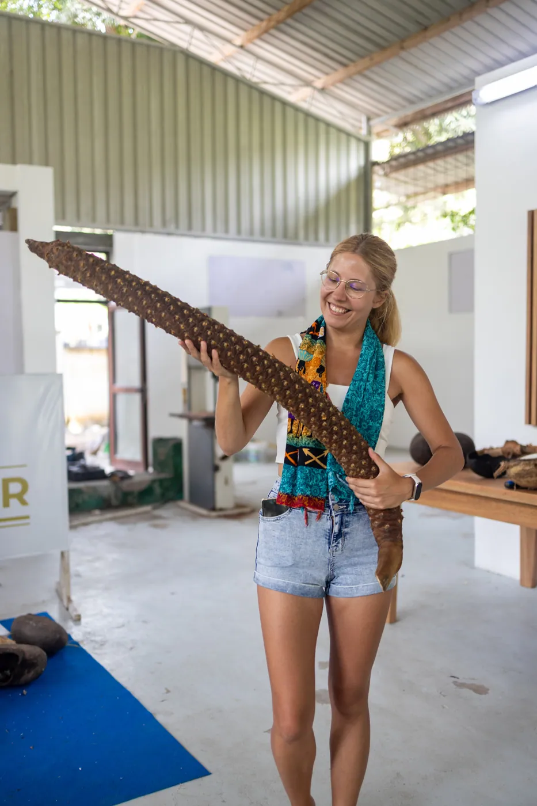
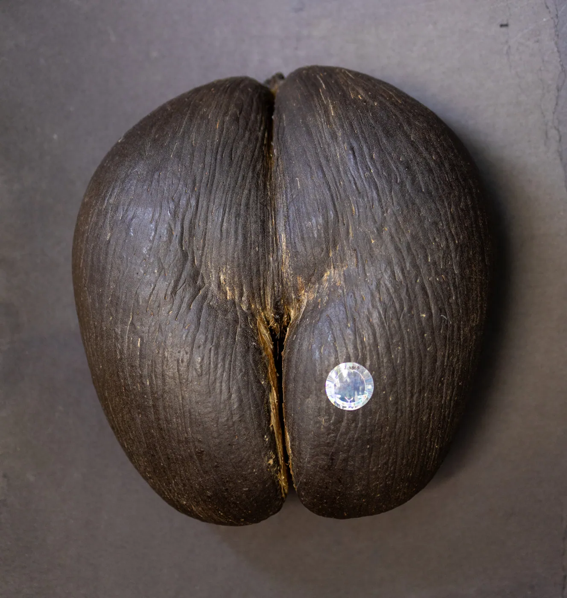

Fun & Crazy Facts About the Coco de Mer of the Seychelles

The Seychelles is like paradise on Earth: turquoise waters, palm-fringed beaches, and sunsets that look like postcards. But ask anyone what the most legendary symbol of the islands is, and you’ll hear one cheeky answer: the Coco de Mer.
This giant, curvy nut is mysterious, rare, and full of record-breaking secrets. Let’s dive into some fun (and slightly crazy) facts about the superstar of the plant world!
Where Can It Be Found?
Nowhere else on Earth – seriously. The Coco de Mer grows only in the Seychelles, and even then, only on two islands: Praslin and Curieuse.
Want to see them in the wild? Head to Vallée de Mai Nature Reserve on Praslin – a UNESCO World Heritage Site. Walking through feels like stepping into Jurassic Park (minus the dinosaurs). Massive palms tower above, and the forest has this magical hush… until you look up and spot the world’s cheekiest nut hanging overhead.
Why It Holds So Many World Records
The Coco de Mer is basically the Michael Phelps of the plant world – it keeps smashing records:
- Heaviest seed in the world – up to 30 kg (yep, heavier than your carry-on suitcase).
- Largest nut in the world – with a diameter of 40–50 cm.
- Biggest leaves among palms – each stretching up to 10 meters long.
- Longest leaf stalks – over 4 meters, like giant green spears.
- Longest time to ripen – one nut takes 6–10 years to mature on the tree.
- Slowest sprouter – after falling, it can take up to 2 years before a seedling pokes through.
- Oldest living palms – Coco de Mer trees can live for 200–300 years (some scientists think maybe even longer).

Oh, and here’s a cheeky extra: the male tree has a record too. Its flower stalks grow up to 1 meter long… and let’s just say, they look very suggestive. (Mother Nature definitely had a sense of humor here!)
What’s So Cool About the Coco de Mer
Okay, let’s talk about the obvious: its shape. The nut looks like… well… a perfect pair of human buttocks (or thighs, depending on who you ask). Tourists can’t stop giggling when they first see it, and honestly, neither could the sailors who discovered it centuries ago.
That’s why it’s become a symbol of love, fertility, and sensuality. In fact, in ancient times, people believed the Coco de Mer had magical, even aphrodisiac powers. Today, it’s still one of the world’s most unique souvenirs – exotic, rare, and full of stories.
Why Is It Called Lodoicea Maldivica?
Funny story – the Coco de Mer isn’t from the Maldives at all. Centuries ago, giant nuts started washing up on Maldivian beaches. No one knew where they came from, so they named it Lodoicea maldivica.
It wasn’t until explorers reached the Seychelles that the mystery was solved: these amazing nuts were born right here, in the lush island forests. The name stuck though… so you could say the Coco de Mer has the ultimate case of mistaken identity.
⚠️ Why Is It Endangered?
With all its fame, the Coco de Mer is also in danger. Here’s why this superstar nut needs protecting:
- It only grows naturally on two islands – which makes its population super limited.
- It reproduces very slowly – waiting decades for trees to mature and nearly a decade for nuts to ripen means recovery is tough.
- Overharvesting – in the past, people collected way too many nuts (because who doesn’t want the world’s cheekiest souvenir?).
- Habitat loss – even paradise isn’t immune to deforestation and human activity.
Today, the Coco de Mer is listed as endangered, and the Seychelles government strictly controls who can collect, sell, and export the nuts. Every legal Coco de Mer comes with a numbered certificate, making it one of the most highly regulated (and most valuable) plants in the world.
Visit the Only Factory in the World
Want a once-in-a-lifetime Coco de Mer experience? You can actually see the nut being opened right in front of you – but only in one place:
The Coco de Mer Collection in Au Cap, on Mahé Island.
It’s the only factory in the world where visitors can watch experts carefully open the nut, polish it, and reveal the beauty inside. It’s part museum, part workshop, and part wow-factor
– the kind of experience that makes you feel like you’re witnessing history come alive.
If you’re a Coco de Mer fan (and let’s face it, who isn’t after seeing one?), this is a must-do stop while exploring Mahé.
Where to Buy the Best Ones

Not all Coco de Mer nuts are the real deal. Some are fakes, some are unlicensed, and some don’t come with the official government certificate you need.
✨ If you want a 100% authentic, beautifully polished Coco de Mer, check out our shop. It’s the go-to spot for certified souvenirs – meaning you’re not just buying a nut, you’re taking home a little piece of Seychellois magic.
The Coco de Mer is more than just a nut – it’s a record-breaker, a symbol of love, and a living legend. Whether you’re hiking through Vallée de Mai, visiting the Coco de Mer Collection factory, or taking one home as a souvenir, one thing’s for sure: you’ll never forget your first Coco de Mer sighting!